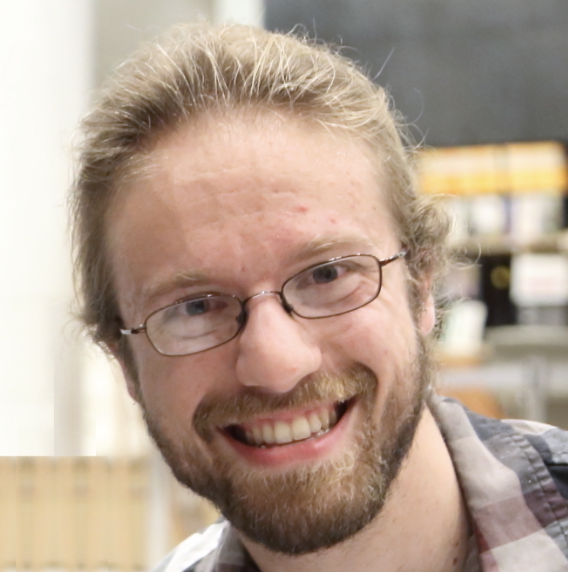

Call for papers (CfP)
Formal and Experimental Advances in Sign Language Theory (FEAST) 2023
The tenth meeting of the “Formal and Experimental Advances in Sign Language Theory” (FEAST) colloquium will take place at the University of Bergen, Norway, on June 27th–29th, 2023. It is organized by the Department for Linguistic, Literary and Aesthetic Studies at the University of Bergen (UiB), and co-organized by the Western Norway University of Applied Sciences (HVL), The Centre for Sign Linguistics and Deaf Studies of Chinese University of Hong Kong and Bergen Døvesenter.
Conference dates
June 27th-29th, 2023
Venue
University of Bergen, Bergen, Norway (Auditorium Egget) + online
Languages
The official conference languages are International Sign (IS), Norwegian Sign Language (NTS) and English. Presentations will be given in IS or English and interpretation is provided between these languages as well as to NTS, alongside live captioning in English. Participants are expected to sign during the conference and its social events (e.g. breaks and conference dinner).
Keynote presenters
 |
 |
| Kate Rowley (DCAL, UCL) https://www.kate-rowley.co.uk/ |
Jeremy Kuhn (Institut Jean Nicod (CNRS)) http://jeremykuhn.net/ |
Call for abstracts
| IS |
|---|
| NTS |
|---|
We invite both on stage presentations (30-minute presentation, followed by 15-minute questions and answers) and mini-presentations (5-minute presentation followed by 5 minutes for questions) on any formal and experimental approaches to sign language research. This year, FEAST will include a special session on theoretical and experimental approaches to non-manual markers. Interpretation will be provided between the following languages: Norwegian Sign Language, IS, English. We encourage the presenters to give their talk in a sign language.
The conference will be in a hybrid format. The details are to be announced on the website later.
All accepted papers (both on-stage and mini) will be invited to submit to FEAST proceedings (https://raco.cat/index.php/FEAST) after the meeting.
Abstract submission
The anonymous abstract should include the title and indicate whether it is intended for on stage or mini-presentation. Abstracts should not be longer than two pages in length (including tables, examples and references), in 12-point type, single line spacing and 2.5 cm margins. Abstracts should be submitted in PDF format through the FEAST 2023 EasyChair page: https://easychair.org/conferences/?conf=feast2023
Video submission in IS or NTS are welcome (maximum length 5 minutes). Abstracts will be reviewed by an external panel and the reviewing process will be double-blind. At maximum two abstracts (one of which must be co-authored) can be submitted.
Abstract submission deadline: January 5th, 2023
Acceptance notification: March 1st, 2023
Location
The meeting is funded by:
- University of Bergen
- Western Norway University of Applied Sciences
- The Centre for Sign Linguistics and Deaf Studies of Chinese University of Hong Kong
- Bergen Døvesenter
- European Commission